Every screen in these slides is the working app.1 / 7
The problem
A farmer gets about 40 seasons in a lifetime. The climate is changing the rules.
Rain shifts
Late starts, long dry spells and floods break a calendar that worked for decades.
Heat at flowering
A few hot days at the wrong moment can empty a harvest.
Tired soil
Months of bare ground after harvest wash away in heavy rain.
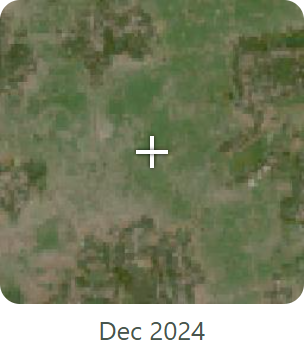
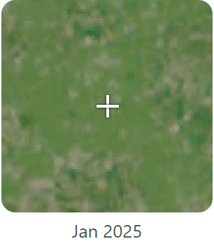
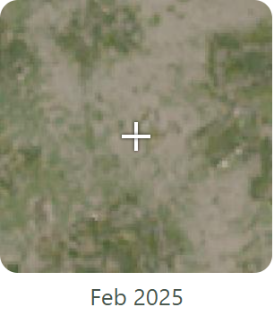
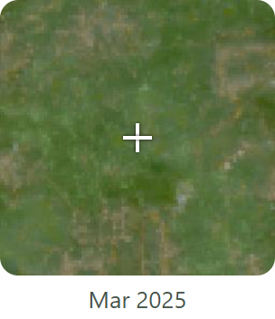
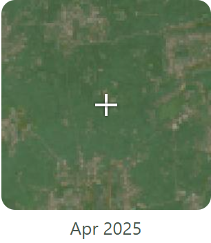
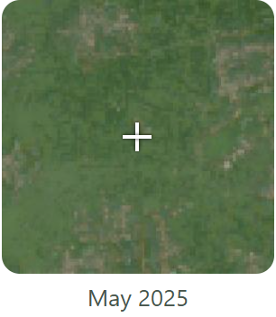
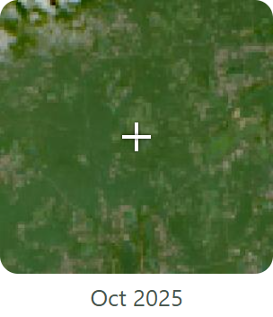
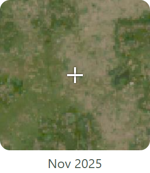
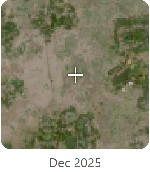
A real field in Bogura, Bangladesh, month by month from space (NASA HLS: Landsat and Sentinel-2, through NASA GIBS). Green is growing crop; pale brown is bare soil.
NASA measures rain, heat, soil moisture and greenness for every field on Earth, but as satellite files, not answers. Sky2Root turns them into a crop plan, for farmers and the advisers who serve them.
Sky2Root · Team Groot · NASA Space Apps Challenge 20262 / 7
How it works
Three questions. One answer.
About 10 seconds for a new fieldFree, no loginWorks offline once opened7 languages, incl. Bangla, Hindi, Kiswahili
1
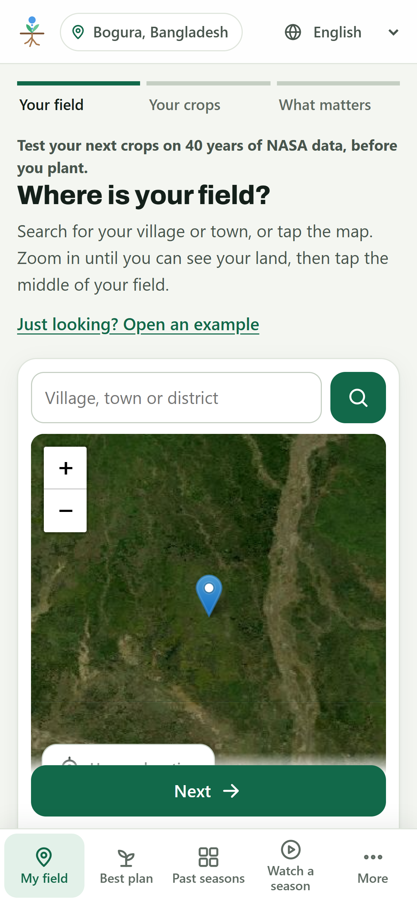
Where is your field?Search, or tap the map. Any field on Earth.›2
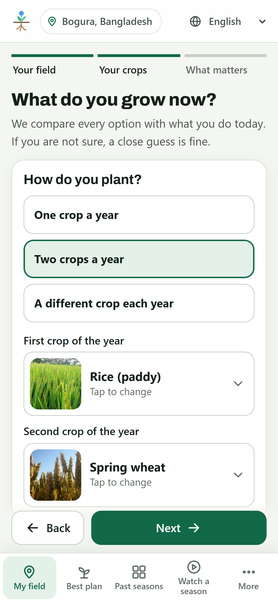
What do you grow now?Crops by photo; water and floods.›3
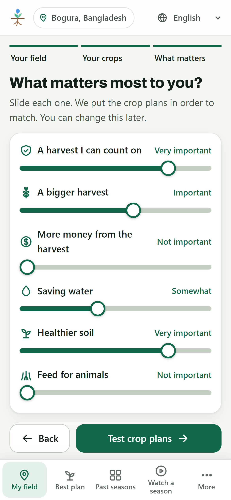
What matters most?A sure harvest, money, water, soil, feed.›✓
Your best crop planCompared with what you grow now.
Sky2Root · Team Groot · NASA Space Apps Challenge 20263 / 7
From the sky to the root
Every season since 1985, replayed day by day
Sky NASA data for any point
NASA POWERdaily heat, humidity, wind, sun since 1984
GPM IMERGdaily rain since 1998
NEX-GDDP-CMIP62041-2060 from 5 climate models, 2 scenarios
SMAP L4root-zone soil moisture, an independent check
HLS (Landsat, Sentinel-2), MODISgreenness at 30 m, bare-soil days, burned land, water use check
GRACE/GRACE-FO, SRTMwater-storage trend, slope for erosion
→
Simulate each rotation
FAO-56 water balancerain fills the soil, the crop drinks it, day by day
Crop calendarssowing windows, heat at flowering, waterlogging, frost
Hotter 2050the same seasons, shifted by each model
→
Root ranked for you
Your prioritiesa sure harvest, food, money, water, soil, feed
At least three plansthe best match, a small change, and what you grow now
For eachwhy it came up, the evidence, benefits, what is unknown, what to check locally
El Niño nowhow each plan did in past El Niño and La Niña years
Plain wordsin 7 languages, with every number traceable to its source
Different grids, one field: weather about 50 km, rain 10 km, soil 250 m, greenness 30 m, joined into one daily record for the point you mark.
Also: ISRIC SoilGrids 2.0 (soil), FAOSTAT (crops, yields and prices by country), NOAA Oceanic Niño Index, JRC Global Surface Water. Methods: docs/METHODS.md.
Sky2Root · Team Groot · NASA Space Apps Challenge 20264 / 7
A real example: rice land in Bogura, Bangladesh
One small change: no failed seasons, more than twice the soil score
What they grow nowRice, then wheat
Small changeRice, then mustard, plus a cover crop
Best matchMaize and mustard in turn, plus a cover crop
Failed seasons, 1985-2025
3 of 81
0 of 81
0 of 41
Failed seasons in a warmer 2050 (SSP2-4.5; range across 5 models)
11 of 81 5-17
0 of 81 0-2
0 of 41 0-1
Soil health score
27 / 100
64 / 100
63 / 100
Irrigation a year
144 mm
133 mm
113 mm
Harvest value a hectare, before costs
about $2,100
about $2,100
about $1,200 drops rice
Each plan comes with: Why it came upThe evidencePossible benefitsWhat we do not knowWhat to check locally
Simulated on NASA POWER and GPM IMERG for this field, with default priorities. Yields assume good management, so read them as a comparison. Early temperatures drift at this site; the app flags it, and failure counts are a guide (docs/VALIDATION.md, check 9). A local expert should review any change.
Sky2Root · Team Groot · NASA Space Apps Challenge 20265 / 7
Can you trust it?
Checked against data it never used
0.51mean correlation of simulated soil water with NASA SMAP at 7 fields on 4 continents
12 of 15known drought years flagged as poor or failed, including Iowa 1988 and 2012
4 of 4regions where the rain record shows El Niño's known effect
0parameters fitted to these checks
Where it falls short is written down too: weak agreement with SMAP at flooded rice land, a drifting early temperature record, national yields in big countries. All in docs/VALIDATION.md.
It supports farmers and advisers. It does not replace their judgement.
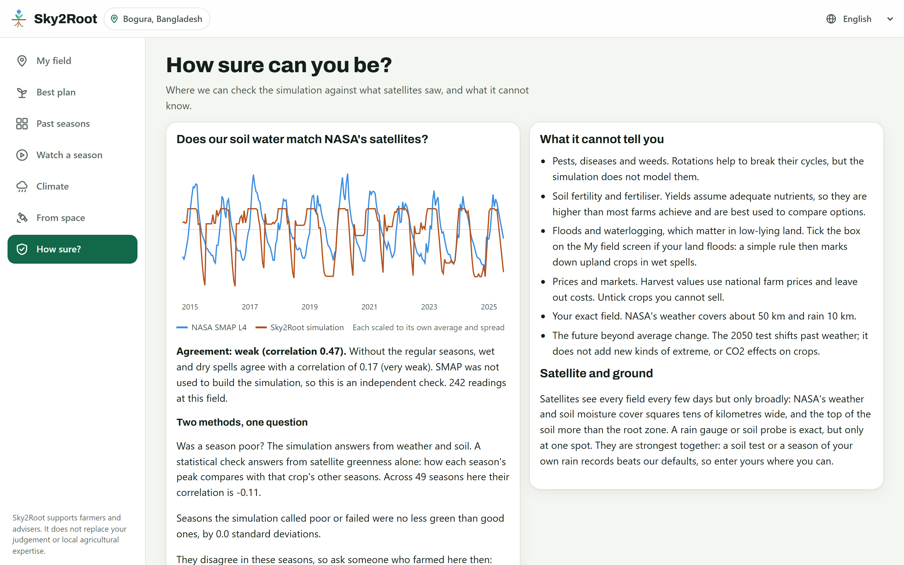
Sky2Root · Team Groot · NASA Space Apps Challenge 20266 / 7
Test the Bogura results with farmers and extension officers
Native speakers to review the six other languages
Field-level crop maps and a temperature record free of drift
ECOSTRESS heat and water stress where it covers farmland
Low-cost soil probes to check SMAP on the ground
Built with help from an SI coding assistant (Claude Code). The app itself uses no generative SI: its advice is worked out from the simulation by fixed rules.
Sky2Root · Team Groot · NASA Space Apps Challenge 20267 / 7